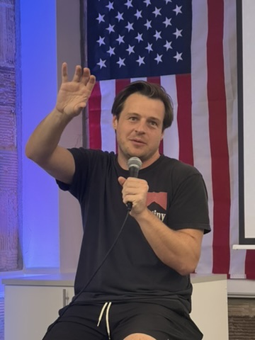
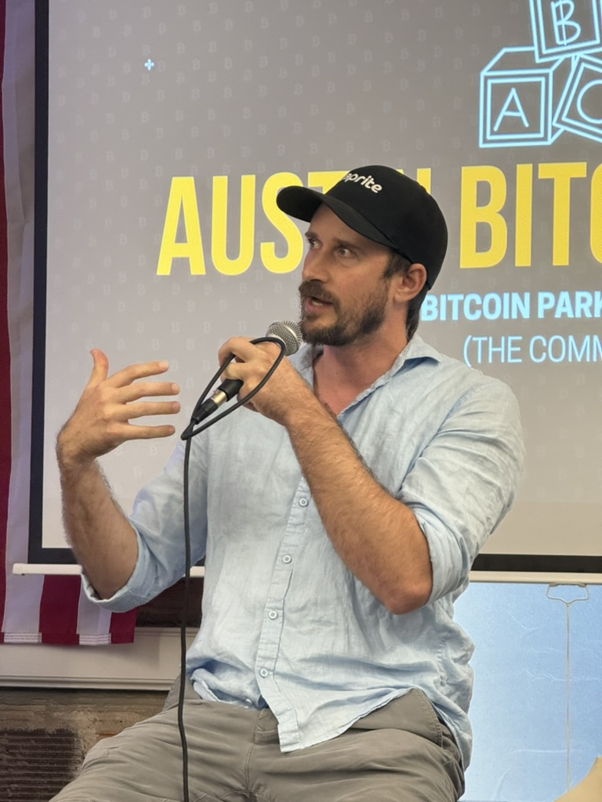
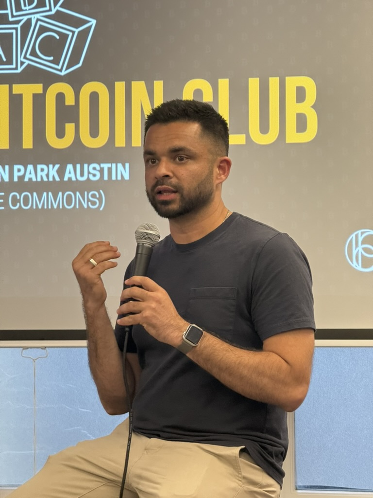

The conversation began with a straightforward premise: AI tools aren't replacing Bitcoin builders—they're making them faster, sharper, and more capable of shipping products that matter. Sahil Chaturvedi, a designer at Ark Labs, and Nate Kitzke, head of engineering at Zaprite, brought different perspectives but arrived at similar conclusions: AI is a force multiplier, not a replacement.



For Chaturvedi, the transformation started with design. "AI has completely changed how I approach mockups and iterations," he explained. Where designers previously spent hours refining layouts pixel by pixel, AI-assisted tools now generate multiple variations in seconds. The designer's role shifts from execution to curation—choosing the best direction, refining the details, and ensuring the final product aligns with user needs.
But speed isn't the only advantage. Chaturvedi emphasized that AI helps designers explore creative directions they might not have considered otherwise. "You get options you wouldn't have thought of on your own," he said. "It's like having a brainstorming partner who never gets tired."
On the engineering side, Kitzke described how AI tools have become indispensable for code review, debugging, and even writing entire functions. "I use AI to catch things I might have missed," he said. "It's not perfect, but it's another set of eyes—one that doesn't get distracted or tired."
Both panelists acknowledged the risks. AI hallucinations—instances where models generate plausible-sounding but incorrect information—remain a challenge. Kitzke noted that engineers still need to verify every line of AI-generated code. "You can't blindly trust it," he said. "But when you know what you're looking for, it accelerates everything."
"AI doesn't replace judgment. It amplifies it. The best builders are the ones who know when to use it—and when to ignore it."
The discussion also touched on a broader philosophical point: Bitcoin builders, more than most, understand the importance of sovereignty and self-reliance. AI tools, when used correctly, extend that principle. They allow small teams to compete with large corporations, enable solo builders to ship products that once required entire departments, and reduce dependence on external service providers.
Chaturvedi summed it up: "We're in a rare moment where the tools are democratizing faster than the incumbents can adapt. Bitcoin builders should be taking full advantage."
The panel ended with a question from the audience: Will AI make Bitcoin products better, or will it just make them faster? Kitzke's answer was direct. "Both," he said. "But only if the people using it care about quality. AI doesn't have taste. You do."
For Bitcoin builders navigating an increasingly competitive landscape, the message was clear: AI isn't a threat to craftsmanship. It's a tool that, in the right hands, makes great work possible at a scale that wasn't conceivable just a few years ago.